| 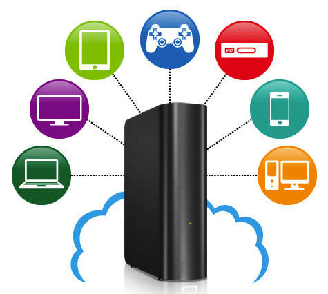 |
BetterDrive is a improved personal cloud storage system. It lets the users own and control their files absolutely on their private storage center, while benefits from cloud features include remote access over Internet, synchronization among multiple devices, share and collaboration with others. The software works on the top of PPEngine that leveraged technologies like peer-to-peer networking, VPN, and WebRTC/ORTC. |
C++, STL Javascript, JQuery WebRTC/ORTC, VPN Samba, SMB/CIFS Windows, Visual Studio Mac OSX, Xcode Linux, GCC/G++/GDB |

|
Face Detection is used to determines the locations and sizes of faces in a digital image. Face Recognition is used to automatically identify a person in a digital image and determine the person’s main characteristics, such as age and gender. This program demonstrated face detection with a HAAR cascade classifier in OpenCV. Each detected face is marked with a rectangular box and saved as a separate image file, which can be used for face recognition later with algorithms in OpenCV, such as Eigenfaces, Fisherfaces, and Local Binary Patterns Histograms (LBPH). Face detection and recognition can be used in photo management or video surveillance system. |
C++, STL OpenCV HAAR Xcode Mac OSX |
| 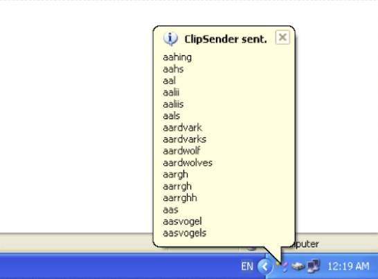 |
ClipSender is a small software to send current contents of Windows system clipboard to a given URL with HTTP POST method. The program responds to keyboard shortcut like CTRL+S with a global keyboard hook implemented in a Win32 DLL. The program presents a Win32 GUI with a system tray icon. |
Win32 clipboard API Win32 WinHTTP API Global keyboard hook UTF-8, Unicode Win32 DLL Windows, Visual C++ |
| 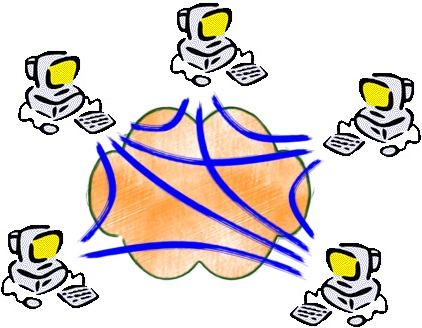 |
PPEngine is a software framework for peer-to-peer (P2P) networking that I developed for Limlabs. The aim of this project is to build a library (or framework) to make it easier to introduce peer-to-peer features into network applications. It leveraged existing technologies like NAT traversal (libjingle), VPN (IPOP, N2N), and WebRTC/ORTC. |
C++, STL, XML TCP/UDP HTTP, DNS NAT, STUN/TURN/ICE Windows, Visual Studio Linux, GCC/G++/GDB |
| 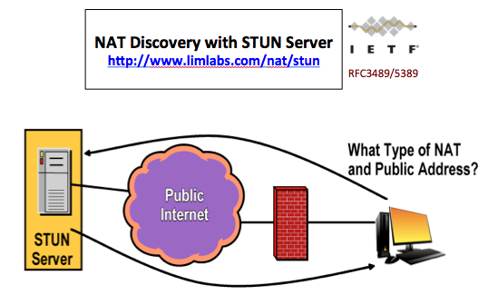 |
NAT traversal is necessary for network applications with peer-to-peer features. A series of IETF RFC specifications have been proposed to help NAT traversal issues. This program follows RFC 3489/5389 to demonstrate NAT discovery with help of a STUN server. Programming involves a parser of STUN messages and the work flow of NAT discovery proposed in RFC 3489/5389. |
C++, STL Socket, TCP/UDP NAT, STUN Xcode Mac OSX |
| 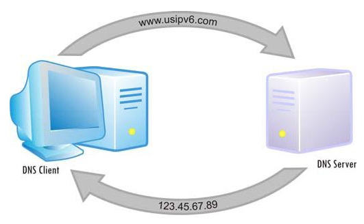 |
This is C++ implementation of a parser for DNS packets. With these classes your applications can easily send request packets to DNS server, and parse received response packets. It handles most of DNS resource records types, such as A, MX, CName, TXT, and so on. |
C++, STL DNS socket, TCP/UDP Windows, Linux |
| 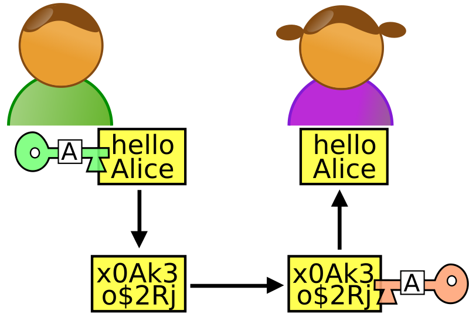 |
Cryptography plays a important role in network security. This is a demo program for the usage of Crypto++, a C++ cryptography library, and JCE, a Java cryptography extension. |
C++, Java Crypto++ JCE DES, AES, BLOWFISH RSA, ECC |
| 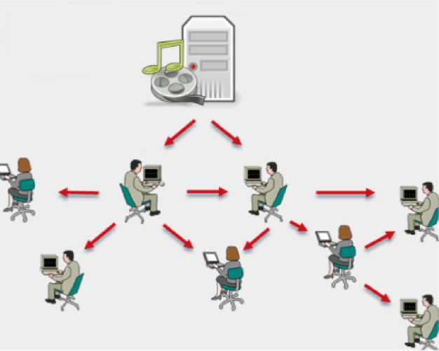 |
PPCast is a on-demand video streaming system that I developed for Limlabs. The aim of this project is to design a better architecture for peer-to-peer video streaming. The video contents are packed into RTP packets and delivered from server to client, or from client to client, driven by data availability. It currently supports ASF/WMV file formats only, but extendable to other formats. |
C++, STL MFC, ActiveX TCP/UDP, RTP/RTSP ASF/WMV Visual Studio 2008 GCC/G++/GDB Windows, Linux |
| 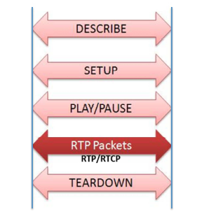 |
RTSP is one of the most popular media streaming protocols. Itself is a session manager protocol. The media contents are delivered via RTP protocol once the session is established. Here is C++ implementation of a simplified RTSP server that can be embedded in applications to interact with RTSP clients. Programming involves TCP server, RTSP methods handling, session management, and RTP streaming over UDP. No RTCP is included in this code. |
C++, STL TCP/UDP RTP/RTSP |
| 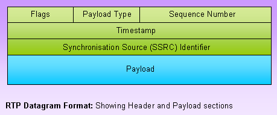 |
RTP is one of the most popular media streaming protocols used to deliver media contents over UDP. Here is C++ implementation for packing media data into RTP packets. It currently supports video file formats of ASF/WMV and RM/RMVB, and extendable to other formats. |
C++, STL RTP/RTSP ASF/WMV RM/RMVB |
|
Hat is a class project for my coursework at The George Washington University. The aim of this project is to develop an application with networking technologies. The software manages personal photos stored in distributed heterogenous storage devices. Programming involved database, file system events (FSEvent on Mac OSX), file states information, photo file metadata, identical photo analysis, and APIs of online photo storage services. |
C++, STL SQLite, SQL, OTL Zero ICE OpenCV, ImageMagic Flickr API Xcode Mac OSX |
| 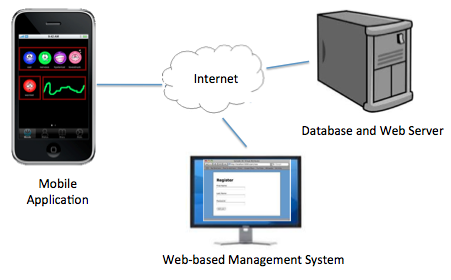 |
Tie is a class project for my coursework at The George Washington University. The aim of this project is to study the modern software architectures for social networks. Except for traditional web development technologies, like database design and dynamic web programming, it also involved web service with HTTP/REST interface, Android GUI application programming with Java. |
PHP, SQL HTML/CSS, Javascript Android, Java Eclipse, ADT Apache, MySQL Linux |
| 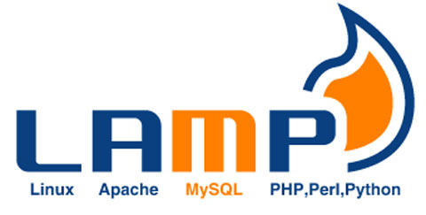 |
This is a class project for my coursework at The George Washington University. The aim of this project is to experience the full lifecycle of software development, from analysis and design, through implementation and testing, with a web application running on LAMP (Linux, Apache, MySQL, and PHP) platform. I worked as a team member (leader) with other 2 classmates. Programming involved a simple MVC framework and database design. |
PHP, SQL HTML/CSS, Javascript MVC framework SpeedPHP Apache, MySQL Linux |

|
FireWind is a Internet video streaming system (WebTV) that works in a peer-to-peer (P2P) fashion. I worked on this project as a Senior Software Engineer (Architect) at first and a Director of Software Development later. The system includes web-based applications for management, servers running on Windows and Linux, client side application and ActiveX control. My work involved in the full lifecycle of the software development. |
C++, STL, MFC Winsock, TCP/UDP HTTP, RTP/RTSP ASF/WMV, RM/RMVB Win32, ActiveX Visual Studio 6.0/2003 GCC/G++/GDB Windows, Linux |
| 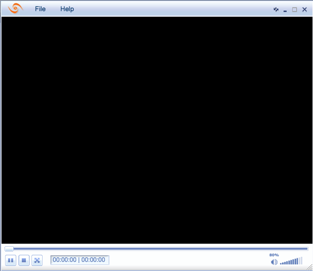 |
This program demonstrated a new way to implement skin features in desktop applications. A Flash file is loaded with a Flash Player ActiveX control and displayed as the GUI of the application, like that in some web applications. Commands and data can be exchanged between Flash and application. Changing skin is nothing more than reloading another Flash file with the same predefined interface. |
C++, MFC ActiveX Adobe Flash, SWF Skin Visual Studio 6.0 Windows 2000/XP |

|
This is an ActiveX control of tree grid view, which is used in an web application to present a complex administration interface. It leveraged TreeControl in Win32 GUI and provides more customized features to meet the needs of web applications. |
C++, MFC ActiveX Win32 API Visual Studio 6.0 Windows 2000/XP |
| 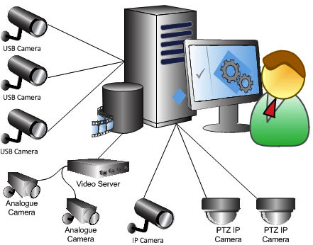 |
GoldenEye is a digital video surveillance system that supports remote control and monitor over Internet. I worked in the team as a Software Engineer at first and an Software Architect later. Work involved digital video compression, video streaming over Internet, and smart features like silent/motion detection, face detection/recognition. I designed a DirectShow-like but simplified video processing architecture. |
C++, STL, MFC Win32 API, ActiveX Winsock, TCP/UDP, HTTP MPEG,H.26x JPEG, MJPEG OpenCV, Intel IJL/IPL Visual Studio 6.0 Windows 2000/XP |
| 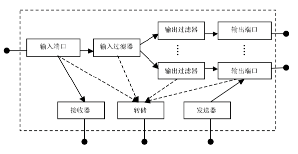 |
ForwardIt is a real-time data forwarding system. The server software receives data from a UDP unicast or multicast address and resend it to one or more predefined addresses (unicast or multicast). The client software receives and displays the forwarded data, and has a control panel to subscribe data channels. The server supports multiple real-time data channels forwarding simultaneously. |
C++ MFC, Winsock TCP/UDP, Multicast ORB style RPC Zero ICE Visual Studio 6.0 Windows 2000/XP |
| 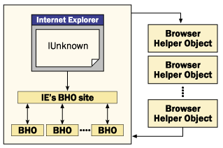 |
This is a BHO (Browser Helper Object) plugin for Internet Explorer (IE) that developed for Sony IP Camera SNC-RZ30 applications. The BHO filters particular images objects (with tag img and predefined src) and conducts certain processing on the images before they are rendered. There is also a management tool to install or uninstall the BHO plugin. |
C++, MFC BHO, COM Intel IJL/IPL SkinMagic Visual Studio 6.0 Windows 2000/XP |